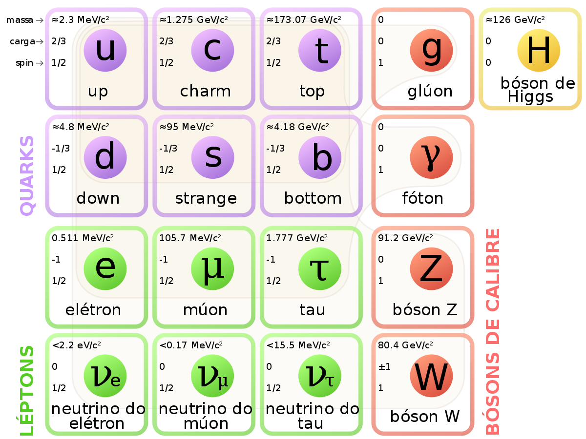

Partículas fundamentais
João Pedro Perissinotto Vinagre - 744918
Juliano Cavalcante Teixeira da Silva - 744922
Até os anos 30
- Prótons
- Nêutrons
- Elétrons
Atualmente
Modelo Padrão

Modelo Padrão
- Quantização
- Números quânticos
Férmions e Bósons
Férmions:
- Número quântico s semi-inteiro
- Elétrons, prótons, nêutrons
Bósons:
- Número quântico s inteiro
- Não obedecem Princípio de Exclusão de Pauli
- Fóton, glúon, bóson de Higgs
Hádrons e Léptons
Hádrons:
- Mais massivos
- Sofrem interação forte
- Formados por quarks
Léptons:
- Menos massivos
- Sofrem interação fraca
Partículas e antipartículas
- Mesma massa e spin
- Outros números quânticos opostos
- Pode formar antimatéria
- Em contato com sua contraparte, se aniquila
Léptons
- Não são compostos por outras partículas
- Não compõem o núcleo atômico
-
3 famílias:
- Elétron e Neutrino do Elétron
- Múon e Neutrino do Múon
- Tau e Neutrino do Múon
Neutrinos
- Experimentos em câmaras de bolhas
- Estudados através dos caminhos ionizados e caminho das partículas
- Efeito Cherenkov
Hádrons
- Compõem o núcleo atômico
- Dividem-se em bárions e mésons
- Número bariônico $ B $
- Estranheza* (partículas $ K $ e $ \Sigma $)
*Lei de conservação de estranheza só vale para partículas que sofrem interação forte
Quarks
- 6 flavours: Up, Down, Strange, Charm, Top e Bottom
- Presentes em conjuntos de 2 (Mésons) ou 3 (Bárions)
- Não são encontrados livres
Partículas mensageiras
- Possibilitam as interações entre partículas
- São bósons
- Gráviton
Interação eletromagnética
- Acontecem por meio de trocas de fótons entre partículas carregadas
- O evento não viola a conservação de energia:
$ \Delta E \cdot \Delta t \approx \hbar \Rightarrow \Delta t = \frac{\hbar}{\Delta E}$
Interação fraca
- Interação eletrofaca
- Tem como partículas mensageiras os bósons $ W $ e $ Z $
Interação forte
- Tem como partículas mensageiras os glúons
- Cada flavour dos quarks possui três cores: vermelho, verde e azul, para os antiquarks tem se o antivermelho, antiverde e antiazul
- Força entre quarks: força de cor